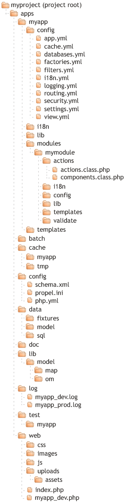
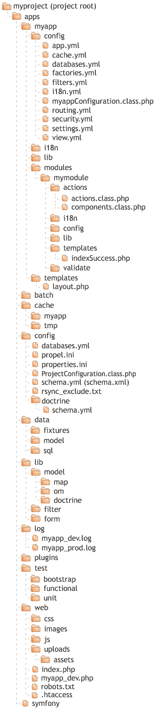
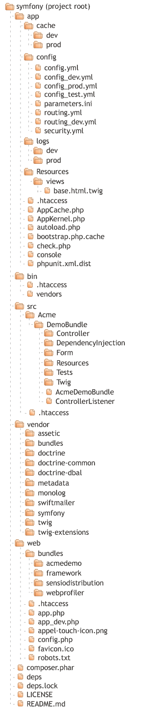

Symfony Side-by-Side Reference for versions 1.0.x - 1.3.x/1.4.x - 2.0.x
This is a work in progress. If you want to contribute or if you have corrections, please fork and report on GitHub
Last updated in: .
| 1.0 | 1.3 / 1.4 | 2.0 | |
|---|---|---|---|
| Usage | $ symfony task_name |
$ symfony [options] task_name [arguments] |
$ php app/console [options] command [arguments] |
| Options for every task (command) | - |
|
|
| List available tasks (commands) | $ symfony -T |
$ symfony list [--xml] [namespace]or $ symfony |
$ php app/console listor $ php app/console |
| Installed version of the symfony package (and path of the symfony libraries used by CLI) | $ symfony -V |
$ symfony -V |
$ console |
| Displays help for a task (command) | - | $ symfony help [--xml] [task_name] |
$ php app/console help [command] |
| Creates a skeleton class for a new task | - | $ symfony generate:task [--dir=[lib/task]] [--use-database=[doctrine|propel|main|false]] [--brief-description="..."] <task_name> |
|
| 1.0 | 1.3 / 1.4 | 2.0 | |
|---|---|---|---|
| Clear the cached information | $ symfony clear-cache
shortcut: $ symfony cc
|
$ symfony cache:clear [--app=app_name] [--env=[prod|dev]] [--type=type]
shortcut: $ symfony cc |
$ php app/console cache:clear [--no-warmup] |
| Warms up an empty cache | - | - | $ php app/console cache:warmup |
| Configure the author for a project. Used by the generates to pre-configure the PHPDoc header | - | $ symfony configure:author <author_name> |
|
| Displays current routes for an application | - | $ symfony app:routes <app_name> [route_name] |
$ php app/console router:debug [route_name] |
| Dumps all routes as Apache rewrite rules | - | - | $ php app/console router:dump-apache [--base-uri=...] [script_name] |
| Initialize the project. Create basic directory structure for a new project in the current directory | $ symfony init-project |
$ symfony generate:project [--orm=[Doctrine|Propel|none]] [--installer=installer_script] <project_name> [author_name] |
|
Initialize an application. Creates basic directory structure for a new application in the
current project. PHP files corresponding to the front controllers of each default environment are also created in the project root web/ directory |
$ symfony init-app <app_name> |
$ symfony generate:app [--escaping-strategy=...] [--csrf-secret=...] <app_name> |
|
| Initialize a module. Creates the basic directory structure for a new module in an existing application. | $ symfony init-module <application_name> <module_name> |
$ symfony generate:module <app_name> <module_name> |
|
| Synchronise the current project with another machine | $ symfony sync <environment_name> [go] |
|
|
Deploys a project on a server. The server must be configured in config/properties.ini. The --rsync-dir is the directory where to look for rsync*.txt files
|
- | $ symfony project:deploy [--go] [--rsync-dir=config] [--rsync-options=[-azC|--force|--delete|--progress]] <server_name> |
|
| Convert the project to an independent, stand-alone application | $ symfony freeze |
|
|
Revert a project to its initial state. It erases the data/symfony/, lib/symfony/ and web/sf/ |
$ symfony unfreeze |
|
|
| Temporarily disable your application, when you need to upgrade a library or a large amount of data | $ symfony disable <application_name> <environment_name> |
$ symfony project:disable <env_name> [app1] ... [appN] |
|
| Reenables the application and clears the cache | $ symfony enable <application_name> <environment_name> |
$ symfony project:enable <env_name> [app1] ... [appN] |
|
| Clears all non production environment controllers | $ symfony clear-controllers |
$ symfony project:clear-controllers |
|
Fixes directory permissions, to change the log/ and cache/ permissions to 0777 (these directories need to be writable) |
$ symfony fix-perms |
$ symfony project:permissions |
|
| Optimizes a project for better performance. This task should only be used on a prod server | - | $ symfony project:optimize <app_name> [env_name] |
|
| Detects deprecated usage in your project | - | $ symfony project:validate |
|
| Displays current services for an application | - | - | $ php app/console container:debug [--show-private] [service_name] |
| Dumps all assets to the filesystem | - | - | $ php app/console assetic:dump [--watch] [--force] [--period=...] [write_to] |
| 1.0 | 1.3 / 1.4 | 2.0 | |
|---|---|---|---|
| Configures the database DSN for a project | - | $ symfony configure:database [--env=env_name] [--name=conn_name] [--class=db_class_name] [--app=app_name] <dsn> [username] [password] |
|
| Propel: Generate the schema.yml for representation of an existing database. For schema.xml use option xml | $ symfony propel-build-schema [xml] |
$ symfony propel:build-schema [--application=app_name] [--env=env_name] [--connection=conn_name] [--xml] [--phing-arg=arbitrary_phing_arguments] |
|
| Propel: Generate the PHP classes for the model, according with the schema.yml | $ symfony propel-build-modelThe base data access classes will be created in the myproject/lib/model/om/. The data access classes will be created in myproject/lib/model |
$ symfony propel:build-model [--phing-arg=arbitrary_phing_arguments] |
|
| Propel: Creates form classes for the current model | - | $ symfony propel:build-forms [--connection=conn_name] [--model-dir-name=model_dir_name]
[--form-dir-name=form_dir_name] [--application=app_name] [--generator-class=generator_class_name]Read the schema information in and/or from the project and all installed plugins |
|
| Propel: Creates filter form classes from the schema for the current model | - | $ symfony propel:build-filters [--connection=conn_name] [--model-dir-name=model_dir_name] [--filter-dir-name=filter_form_dir_name] [--application=app_name] [--generator-class=generator_class] |
|
| Propel: Generates code based on your schema. You must specify what you would like built. | - | $ symfony propel:build [--application=app_name] [--env=env_name] [--no-confirmation] [--all] [--all-classes] [--model] [--forms] [--filters] [--sql] [--db] [--and-load=fixture_file] [--and-append=fixture_file] |
|
| Propel: Generates model and form classes, SQL and initializes the database | - | $ symfony propel:build-all [--application=app_name] [--env=env_name] [--connection=conn_name]
[--no-confirmation] [-F|--skip-forms] [-C|--classes-only] [--phing-arg=arbitrary_phing_arguments] |
|
| Propel: Generates model and form classes, SQL, initializes the database, and loads data | - | $ symfony propel:build-all-load [--application=app_name] [--env=env_name] [--connection=conn_name] [--no-confirmation] [-F|--skip-forms] [-C|--classes-only] [--phing-arg=arbitrary_phing_arguments] [--append] [--dir=fixture_dir] |
|
| Propel: Generate a new CRUD module based on a class from the model (Scaffolding) | $ symfony propel-generate-crud <application_name> <module_name> <model_name> |
$ symfony propel:generate-module [--theme=theme_name] [--generate-in-cache] [--non-verbose-templates] [--with-show]
[--singular=singular_name] [--plural=plural_name] [--route-prefix=route_prefix] [--with-propel-route] [--env=env_name]
[--actions-base-class=base_class_for_actions] <app_name> <module_name> <model_name> |
|
| Propel: Generates a module for a route definition | - | $ symfony propel:generate-module-for-route [--theme=them_name] [--non-verbose-templates]
[--singular=singular_name] [--plural=plural_name] [--env=env_name] [--actions-base-class=base_class_for_actions] <app_name> <route_name>
|
|
| Propel: Generate the SQL code to create the tables described in the schema.yml | $ symfony propel-build-sql(in myproject/data/sql/lib.model.schema.sql) |
$ symfony propel:build-sql [--phing-arg=arbitrary_phing_arguments](in myproject/config/sql/*schema.sql) |
|
| Propel: Create an empty database | $ symfony propel-build-db |
- |
|
| Propel: Insert the SQL code into the database | $ symfony propel-insert-sql(from lib.model.schema.sql file) |
$ symfony propel:insert-sql [--application=app_name] [--env=env_name] [--connection=conn_name] [--no-confirmation] [--phing-arg=arbitrary_phing_arguments] |
|
| Propel: Initialize a new admin module based on a class from the model | $ symfony propel-init-admin <application_name> <module_name> <model_name> |
$ symfony propel:generate-admin [--module=module_name] [--theme=theme_name] [--singular=singular_name] [--plural=plural_name] [--env=env_name] [--actions-base-class=base_class_for_actions] <app_name> <route_or_model> |
|
Propel: Loads data fixtures into the database. Loads data from all the files found in data/fixtures/ |
- | $ symfony propel:data-load [--application=app_name] [--env=env_name] [--append] [--connection=conn_name] [dir_or_file1] ... [dir_or_fileN] |
|
| Propel: Dumps database data to the fixtures directory | - | $ symfony propel:data-dump [--application=app_name] [--env=env_name] [--connection=conn_name] [--classes=...] [target]E.g.: $ symfony propel:data-dump > data/fixtures/dump.yml |
|
| Propel: Creates a graphviz DOT visualization for automatic graph drawing of object model | - | $ symfony propel:graphviz [--phing-arg=arbitrary_phing_arguments] |
|
| Propel: Converts YML schemas to XML | - | $ symfony propel:schema-to-xml |
|
| Propel: Converts XML schemas to YML | - | $ symfony propel:schema-to-yml |
|
| Doctrine: Generates code based on your schema | - | $ symfony doctrine:build [--application=app_name] [--env=env_name] [--no-confirmation] [--all] [--all-classes] [--model] [--forms] [--filters] [--sql] [--db] [--and-migrate] [--and-load=fixture_file] [--and-append=fixture_file] |
|
| Doctrine: Creates one or more databases | - | $ symfony doctrine:build-db [--application=app_name] [--env=env_name] [database1] ... [databaseN]based on configuration in config/databases.yml |
$ php app/console doctrine:database:create [--connection=...] |
Doctrine: Creates form filter classes from the schema. The classes are created in lib/doctrine/filter |
- | $ symfony doctrine:build-filters [--application=app_name] [--env=env_name] [--model-dir-name=...]
[--filter-dir-name=form_dir_name] [--generator-class=generator_class_name] |
|
Doctrine: Creates form classes from the schema for the current model. The classes are created in lib/doctrine/form |
- | $ symfony doctrine:build-forms [--application=app_name] [--env=env_name] [--model-dir-name=...]
[--form-dir-name=form_dir_name] [--generator-class=generator_class_name] |
- |
| Doctrine: Generates a form class based on a Doctrine entity | - | - | $ php app/console doctrine:generate:form <entity> |
Doctrine: Creates model classes from the schema. Read the schema information in config/doctrine/*.yml |
- | $ symfony doctrine:build-model [--application=app_name] [--env=env_name] |
|
| Doctrine: Creates a schema from an existing database ([sf2] Convert mapping information between supported formats) | - | $ symfony doctrine:build-schema [--application=app_name] [--env=env_name]The task creates a yml file in config/doctrine |
$ php app/console doctrine:mapping:convert [--filter=...] [--force] [--from-database] [--extend=...] [--num-spaces=...] [--namespace=...] [--em=...] <to-type> <dest-path> |
Doctrine: Creates SQL for the current model. The generated SQL is optimized for the database configured in config/databases.yml |
- | $ symfony doctrine:build-sql [--application=app_name] [--env=env_name] |
|
| Doctrine: Delete all generated model classes for models which no longer exist in your YAML schema. | - | $ symfony doctrine:clean-model-files [--no-confirmation]Alias: doctrine:clean |
|
| Doctrine: Drop and recreate tables for specified models | - | $ symfony doctrine:create-model-tables [--application=app_name] [--env=env_name] [models1] ... [modelsN] |
|
Doctrine: Dumps the database data in data/fixtures/%target_filename% |
- | $ symfony doctrine:data-dump [--application=app_name] [--env=env_name] [target_filename] |
|
Doctrine: Loads data from all the files found in data/fixtures/. Using the option --append, the task don't delete current data in the database |
- | $ symfony doctrine:data-load [--application=app_name] [--env=env_name] [--append] [dir_or_file1] ... [dir_or_fileN] |
|
| Doctrine: Deletes all files associated with certain models | - | $ symfony doctrine:delete-model-files [--no-confirmation] model_name1 ... [model_nameN] |
|
| Doctrine: Executes a DQL query and displays the formatted results | - | $ symfony doctrine:dql [--application=app_name] [--env=env_name] [--show-sql] [--table] |
|
| Doctrine: Drops databases | - | $ symfony doctrine:drop-db [--application=app_name] [--env=env_name] [--no-confirmation] [db1] ... [dbN](for current model) |
$ php app/console doctrine:database:drop [--connection=...] [--force] |
| Doctrine: Generates a Doctrine admin module | - | $ symfony doctrine:generate-admin [--module=module_name] [--theme=theme_name] [--singular=singular_name] [--plural=plural_name] [--env=env_name] [--actions-base-class=base_class_for_actions] <app_name> <route_or_model> |
|
| Doctrine: Generates migration template | - | $ symfony doctrine:generate-migration [--application=app_name] [--env=env_name] [--editor-cmd=...] <name> |
|
| Doctrine: Generates migration classes from existing database connections | - | $ symfony doctrine:generate-migrations-db [--application=app_name] [--env=env_name] |
|
| Doctrine: Generate migration classes by producing a diff between your old and new schema | - | $ symfony doctrine:generate-migrations-diff [--application=app_name] [--env=env_name] |
|
| Doctrine: Generates migration classes from an existing set of models | - | $ symfony doctrine:generate-migrations-models [--application=app_name] [--env=env_name] |
|
| Doctrine: Generates a Doctrine module | - | $ symfony doctrine:generate-module [--theme=theme_name] [--generate-in-cache] [--non-verbose-templates] [--with-show] [--singular=singular_name] [--plural=plural_name] [--route-prefix=route_prefix] [--with-doctrine-route] [--env=env_name] [--actions-base-class=base_class_for_actions] <app_name> <module_name> <model_class_name> |
|
| Doctrine: Generates a Doctrine module for a route definition | - | $ symfony doctrine:generate-module-for-route [--theme=them_name] [--non-verbose-templates] [--singular=singular_name] [--plural=plural_name] [--env=env_name] [--actions-base-class=base_class_for_actions] <app_name> <route_name> |
|
Doctrine: Inserts SQL for current model. The task connects to the database and creates tables for all the lib/model/doctrine/*.class.php files. |
- | $ symfony doctrine:insert-sql [--application=app_name] [--env=env_name] |
|
| Doctrine: Migrates database to current/specified version | - | $ symfony doctrine:migrate [--application=app_name] [--env=env_name] [--up] [--down] [--dry-run] [version] |
|
| Doctrine: Generates a new Doctrine entity inside a bundle | - | - | $ php app/console doctrine:generate:entity [--entity=...] [--fields=...] [--format=...] [--with-repository] |
| Doctrine: Clears all metadata cache for a entity manager | - | - | $ php app/console doctrine:cache:clear-metadata [--em=...] |
| Doctrine: Clears all query cache for a entity manager | - | - | $ php app/console doctrine:cache:clear-query [--em=...] |
| Doctrine: Clears result cache for a entity manager | - | - | $ php app/console doctrine:cache:clear-result [--id=...] [--regex=...] [--prefix=...] [--suffix=...] [--em=...] |
| Doctrine: Imports mapping information from an existing database | - | - | $ php app/console doctrine:mapping:import [--em=...] [--filter=...] [--force] <bundle> [mapping-type] |
| Doctrine: Shows basic information about all mapped entities | - | - | $ php app/console doctrine:mapping:info [--em=...] |
| Doctrine: Generates entity classes and method stubs from your mapping information | - | - | $ php app/console doctrine:generate:entities [--path=...] [--no-backup] <name> |
| Doctrine: Generates a CRUD based on a Doctrine entity | - | - | $ php app/console doctrine:generate:crud [--entity=...] [--route-prefix=...] [--with-write] [--format=...] |
| Doctrine: Executes arbitrary DQL directly from the command line | - | - | $ php app/console doctrine:query:dql [--hydrate=...] [--first-result=...] [--max-result=...] [--depth=...] [--em=...] |
| Doctrine: Executes arbitrary SQL directly from the command line | - | - | $ php app/console doctrine:query:sql [--depth=...] [--connection=...] <sql_to_execute> |
| Doctrine: Executes (or dumps) the SQL needed to generate the database schema | - | - | $ php app/console doctrine:schema:create [--dump-sql] [--em=...] |
| Doctrine: Executes (or dumps) the SQL needed to drop the current database schema | - | - | $ php app/console doctrine:schema:drop [--dump-sql] [--force] [--full-database] [--em=...] |
| Doctrine: Executes (or dumps) the SQL needed to update the database schema to match the current mapping metadata | - | - | $ php app/console doctrine:schema:update [--complete] [--dump-sql] [--force] [--em=...] |
| Doctrine: Verify that Doctrine is properly configured for a production environment | - | - | $ php app/console doctrine:ensure-production-settings [--complete] [--em=...] |
| Mounts ACL tables in the database | - | - | $ php app/console init:acl |
| 1.0 | 1.3 / 1.4 | 2.0 | |
|---|---|---|---|
| Install a new plugin | $ symfony plugin-install [local|global] <channel_name>/<plugin_name> |
$ symfony plugin:install
[-s|--stability=[stable|beta|alpha]]
[-r|--release=preferred_version]
[-c|--channel=PEAR_channel_name]
[-d|--install_deps] [--force-license] <name> |
- |
| Adds a new PEAR channel | - | $ symfony plugin:add-channel <name> |
- |
| Lists all installed plugins. Also gives the channel and version for each plugin | - | $ symfony plugin:list |
- |
| Publishes web assets for all plugins | - | $ symfony plugin:publish-assets [--core-only] [plugins1] ... [pluginsN] |
- |
| Uninstalls a plugin | - | $ symfony plugin:uninstall
[-c|--channel=PEAR_channel_name]
[-d|--install_deps] <name> |
- |
| Upgrades a plugin. The default channel is symfony. If the plugin contains some web content (images, css or js), the task also updates the web/%name% directory content on Windows. | - | $ symfony plugin:upgrade
[-s|--stability=[stable|beta|alpha]]
[-r|--release=preferred version]
[-c|--channel=PEAR_channel_name] <name> |
- |
| 1.0 | 1.3 / 1.4 | 2.0 | |
|---|---|---|---|
| Generates a bundle | - | - | $ php app/console generate:bundle [--namespace=Acme/BlogBundle] [--dir=...] [--bundle-name=...] [--format=...] [--structure]Note: the bundle namespace must end with "Bundle" |
| Installs bundles web assets under a public web directory | - | - | $ php app/console assets:install <target_dir> [--symlink] |
| 1.0 | 1.3 / 1.4 | 2.0 | |
|---|---|---|---|
| Launch the test suite | $ symfony test <application_name> |
$ symfony symfony:test [-u|--update-autoloader] [-f|--only-failed][--xml=file_name] [--rebuild-all] |
|
Launches all unit and functional tests found in test/. If some tests fail, you can use the --trace option to have more information about the failures: $ symfony test:all -t |
- | $ symfony test:all [-f|--only-failed] [--xml=file_name] |
|
| Outputs the test code coverage given a test file or test directory and a lib file or lib directory for which you want code coverage | - | $ symfony test:coverage [--detailed] <test_name> <lib_name> |
|
Launches functional tests for a given application. The task launches all tests found in test/functional/%application% |
- | $ symfony test:functional [--xml="..."] <app_name> [controller1] ... [controllerN] |
|
Launches all unit tests found in test/unit |
- | $ symfony test:unit [--xml=filename] [name1]...[nameN] |
|
| 1.0 | 1.3 / 1.4 | 2.0 | |
|---|---|---|---|
| Erases (Clears) symfony log files | $ symfony log-purgein apps and environments where the logging.yml file specifies purge: on (default value) |
$ symfony log:clear |
|
| Rotates an application’s log files | - | $ symfony log:rotate [--history = max_number_old_log_files_to_keep]
[--period=period_in_days] <app_name> <env_name> |
|
| 1.0 | 1.3 / 1.4 | 2.0 | |
|---|---|---|---|
| Extracts i18n strings from your project files for the given app and target culture. | - | $ symfony i18n:extract [--display-new] [--display-old]
[--auto-save] [--auto-delete] <app_name> <culture> |
|
| Finds non internationalized strings embedded in templates. Is able to find non internationalized strings in pure HTML and in PHP code | - | $ symfony i18n:find [--env=env_name] <app_name> |
|
| 1.0 | 1.3 / 1.4 | 2.0 | |
|---|---|---|---|
| Sends e-mails from the spool (queue) | - | $ symfony project:send-emails [--application=app_name] [--env=env_name] [--message-limit=max_number_msg_to_send] [--time-limit=time_limit_in_sec] |
php app/console swiftmailer:spool:send [--message-limit=max_number_msg_to_send] [--time-limit=time_limit_in_sec] |
| 1.0 | 1.3 / 1.4 | 2.0 |
|---|---|---|
|  |  |  |
| 1.0 | 1.3 / 1.4 | 2.0 | |
|---|---|---|---|
| Access the Request object (Controller) | $this->getRequest(); |
$request;Note: $request is the type sfWebRequest |
$this->getRequest(); |
| Check if it is an ajax request (Controller) | $this->getRequest()->isXmlHttpRequest(); |
$request->isXmlHttpRequest(); |
$this->getRequest()->isXmlHttpRequest(); |
| Get a $_GET parameter (Controller) | $this->getRequestParameter('page'); |
$request->getParameter('page'); or $request->getGetParameter('page'); |
$this->getRequest()-> query->get('page'); |
| Get all $_GET parameters (Controller) | $this->getRequest()-> getParameterHolder()->getAll(); |
$request-> getParameterHolder()->getAll(); |
$this->getRequest()-> query->all(); |
| Get a $_POST parameter (Controller) | $this->getRequestParameter('page'); |
$request-> getParameter('page'); or $request->getPostParameter('page'); |
$this->getRequest()-> request->get('page'); |
| Get all $_POST parameters (Controller) | $this->getRequest()-> getParameterHolder()->getAll(); |
$request-> getParameterHolder()->getAll(); |
$this->getRequest()-> request->all(); |
| Access the Request object (View) | $sf_request |
$sf_request |
{{ app.request }} |
| Get a $_GET parameter (View) | $sf_params->get('page') or $sf_request->getParameter('page'); |
|
{{ app.request.query.get('page') }} |
| Get a $_POST parameter (View) | $sf_params->get('page') or $sf_request->getParameter('page'); |
|
{{ app.request.parameter('page') }} |
| 1.0 | 1.3 / 1.4 | 2.0 | |
|---|---|---|---|
| Session object (Controller) | $this->getUser(); |
$this->getUser(); |
$this->getRequest()->getSession(); |
| Store an attribute in session (Controller) | $this->getUser()->setAttribute('foo', 'bar', 'admin'); |
$this->getUser()->setAttribute('foo', 'bar', 'admin'); |
$this->getRequest()-> getSession()->set('foo', 'bar'); |
| Get an attribute from session (Controller) | $this->getUser()->getAttribute('foo', '', 'admin'); |
$this->getUser()->getAttribute('foo', null, 'admin') |
$this->getRequest()-> getSession()->get('foo'); |
| Set the user locale - or culture - (Controller) | $this->getUser()->setCulture('en_US'); |
$this->getUser()->setCulture('en_US'); |
$this->getRequest()-> getSession()->setLocale('en_US'); |
| Get the user locale (Controller) | $this->getUser()->getCulture(); |
$this->getUser()->getCulture(); |
$this->getRequest()-> getSession()->getLocale(); |
| Set a flash message (Controller) | $this->setFlash('notice', 'Congratulations, your action succeeded!'); |
$this->getUser()->setFlash( 'notice', 'Congratulations, your action succeeded!'); |
$this->getRequest()->getSession()-> setFlash('notice', 'Congratulations, your action succeeded!'); |
| Session object (View) | $sf_user |
$sf_user |
{{ app.session }} |
| Get a flash message (View) | $sf_flash->get('notice') |
$sf_user->getFlash('notice') |
{{ app.session.flash('notice') }} |
| Check a flash message (View) | $sf_flash->has('notice') |
$sf_user->hasFlash('notice') |
app.session.hasFlash('notice') |
| 1.0 | 1.3 / 1.4 | 2.0 | |
|---|---|---|---|
| Generate URL (Controller) | $this->getController()->genUrl( 'article/read?id=123'); |
$this->getController()->genUrl( 'article/read?id=123'); |
$this->generateUrl( '_mycontroller_myaction', array('foo' => 'bar')); |
| Generate absolute URL (Controller) | $this->getController()->genUrl( 'article/read?id=123', true); |
$this->getController()->genUrl( 'article/read?id=123', true); |
$this->generateUrl( '_mycontroller_myaction', array('foo' => 'bar'), true); |
| Generate URL (View) | url_for('article/read?id=123') |
url_for('article/read?id=123') |
{{ path('_mycontroller_myaction', { 'foo': 'bar' }) }} |
| Generate absolute URL (View) | url_for('article/read?id=123', true) |
url_for('article/read?id=123', true) |
{{ url('_mycontroller_myaction', { 'foo': 'bar' }) }} |
| 1.0 | 1.3 / 1.4 | 2.0 | |
|---|---|---|---|
| Redirect | $this->redirect('module/action'); |
$this->redirect('module/action'); |
$this->redirect( $this->generateUrl( '_controller_action', array('foo' => 'bar'))); |
| Forward | $this->forward('module', 'action'); |
$this->forward('module', 'action'); |
$this->forward( 'AcmeDemoBundle:Hello:fancy', array('name' => $name));Note: Internally, Symfony makes a "sub-request", and returns the Response object from that sub-request |